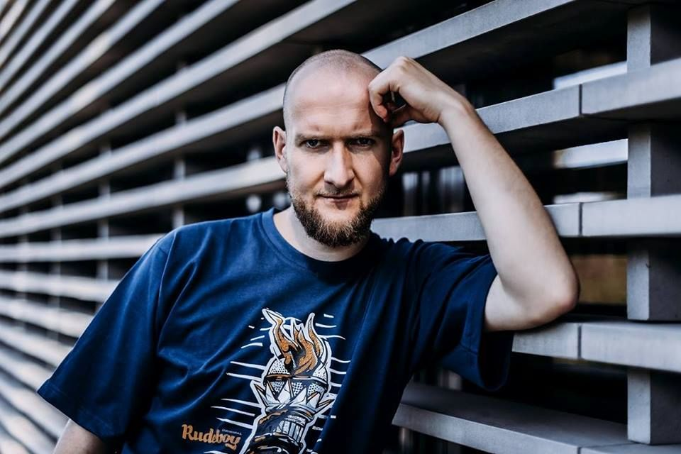

Grubson

Grubson, właściwie Tomasz Iwanca (ur. 28 stycznia 1986 w Rybniku) – polski raper i producent muzyczny.
Iwanca działalność artystyczną rozpoczął pod koniec lat 90. XX wieku. Występował w formacjach 3oda Kru, Siła-Z-Pokoju i Super Grupa. W 2009 roku nakładem MaxFloRec ukazał się pierwszy oficjalny album rapera zatytułowany O.R.S.
Grubson współpracował z takimi wykonawcami i grupami muzycznymi jak: Pokahontaz, EastWest Rockers, Junior Stress, Jamal, Abradab, Natural Dread Killaz, DJ Feel-X, Rahim, Skorup, Dreadsquad, O.S.T.R., Bob One, PMM czy DonGURALesko.